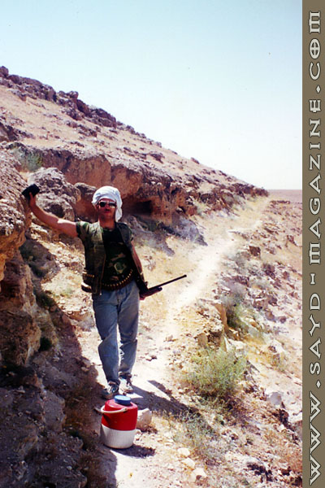

عليك أن تبحث في الشعراء عن عوالمهم المخفية، عن مُغامرات ومَهارات ومزاجات مَطلية بزمنٍ خاصّ، لا يُمكن الوصول إليها إلاّ إذا كنت من الذين يقرأون بين، وفوق وتحت وخارج السطور في آن واحد.
يعرفونه بصيد الكلام الثمين والفكرة الثمينة ألأنيقة، وبصيد القلوب بسهم المحبة الذي لا يقهر، ويتابعه الكثيرون من أهل الصحافة والشعر بشغف جميل. يقرع أبوابنا بحروفه، بكثافة مطر لا يُمل من غزراته.. ولكنهم لا يعرفون أن في هذا الرجل قبيلة من رجال كل منهم يركض في واد ولا يلتقون إلاّ حين النوم..
هاني نديم، الشاعر الصحافي المخرج الرياضي المُصارع الصياد حتمًا... كان لـ"صيد" معه هذا الحوار.
ردًّا على أسئلتنا قال في المقابلة:
* مع أني لست صيادًا ماهرًا فنيًا، فأنا من عائلة تحمل السلاح وتذهب إلى الصيد بشكل يومي، فتعلَّقت بهوامش الصيد وبالطبيعة وهكذا أتخلّص من آثار المدنية الضارة.
* أحب الحجل والترغل بشكل خاص، إنها طيور سريعة خاطفة وذات مذاق.
* أُسافر كثيرًا في عملي الصحافي، كما أعدّ أفلامًا وثائقية عن البلاد والعِباد، هذا ما أتاح لي تجربة صيد مُمتدّة من الباكستان إلى فرنسا وإسبانيا والسودان والعراق، إلى جانب كينيا وجنوب أفريقيا.
* إنَّ الصيد بالصقور هو لَمسار آخر وذهنية أخرى وعالم آخر عن صيد البنادق، جميل ولكنه يحتاج إلى تكوين نفسي مختلف عن تكوين صائدي البنادق. أولئك صقرهم سلاحهم وهو أسرع وأمضى. ذهبت مرة واحدة إلى الصيد بالصقور في السعودية واستمتعت. لكن لا أعتقد أنني سأعيدها.
* الصيد يُعتبر رياضة النبلاء، ما يُفسده هو قلّة الوعي، وهو الإرث الممتد بيننا في الاستهتار بالطبيعة ومُعطياتها، ولا بدّ من مُخالفات شديدة لمن يخرق تلك القوانين.
* الشعر أولاً وأخيرًا.. لكن الصبايا أجمل الطرائد عبر التاريخ، بينما من يقع في الشرك هو نحن.
* فكرة امرأة بسلاح لا يخيب.. في فرنسا، في رحلة صيدنا كانت المسؤولة امرأة، من أمهر الصيادات اللواتي رأيتهنّ في حياتي، خجلت حقًا وأنا أقف بجانبها، فأنا لست من الطبقة الأولى ولا حتّى من الثانية، إنما تكمن أهميتي في الصيد في أني مُختصٌّ بالهوامش، النباتات، الرياح، الزهور والنجوم وحكايا الأدب.
* الصيد يتحوّل إلى هوس وشغف لا ينافسه شغف، وقائمة المهووسين بالصيد في العالم مُفاجِئة وغير مُتوقعة، من يتخيل أن جينفر لورنس مهووسة بإطلاق النار؟ ومادونا المغنية المجنونة بالسلاح ورحلات الصيد، إيفا لونغريا، شانيا تواين، كيرت رَسِل، أرنست همنغواي العظيم كذلك، جاك أوكونور الكاتب العظيم الذي كتب 16 كتابًا أدبيًا في الصيد، قدم وصفًا عظيمًا لحالات الصيد والحيوانات، وكذلك ونستون تشرشل، تيودور روزفلت، وغيرهم الكثير، إنها هواية مُدهشة لأنها لا تتكرر أبدًا.
 * خرجت مرّة إلى الصيد برفقة كلاب إنجليزية محترفة فرق الأمر 180 درجة، ومؤخرًا اقتنيت Benelli Raffaello.
* خرجت مرّة إلى الصيد برفقة كلاب إنجليزية محترفة فرق الأمر 180 درجة، ومؤخرًا اقتنيت Benelli Raffaello.
* في البادية، بعض الصيادين يصيدون الصيادين! كيف ذلك؟ يُطلقون طائرًا شبيهًا بالصقر ومخيط العينين، فإن رموه الصيادة جاؤوا ليأخذوا حقّه! فذات يومٍ أوقعونا في الفخ وأطلقنا النار على هذا الطائر، فجاؤوا ليفاجأوا برئيس المخابرات الجوية معنا، فحبسناهم وقيدناهم 4 ساعات.
* أخطر ما حدث معي، أنني نسيتُ أن أُفرغ بندقيتي، فخرجت طلقة في السيارة، وكُنّا ثلاثة أشخاص، لكنّها مرّت سليمة.
* أنا معجب بأدائكم كوحدة لمكافحة الصيد الجائر، وحماية لتلك الرياضة النبيلة.
* برأي أن التكوين النفسي والجسدي منفصل عن الثقافي وما نكتسب، أنا تكويني وبيئتي تحب الصيد والطرائد، ولك أن تتخيل أنني عُرفت كمصارع في سوريا قبل أن أُعرف كشاعر. فإرنست همنغواي الذي كان شغوفًا جدًا بالصيد والملاكمة ومصارعة الثيران، مثلي تمامًا، كان يكتب أجمل المشاعر.
* كتبت كثيرًا عن الصيد، لكنني أحب هذا النص:
يهرمُ القطا سريعًا
ومن هول فكرة أنه لم يعد صديق السحاب
يموت قبل نضوب البحيرات في آب
ليل القطا أقصر من انتباهة..
يفزّ في بهيم الليل ويطير تحت عباءته خوفًا من نسور الطير صبحا..
هكذا يفعل كل قصير جنحٍ، يعيش الخوف طوال الليل
ويموت الضحى!
يتحلّق الصيّادون حول نقطة ماء في كفّ الصحراء
والقطا الذي قطع كل هذه الفيافي ليشرب
يرى لمعة سبطاناتهم
إلا أنه يهوى كنصل سيفٍ تتلقاه الضفاف
ينتحر انتقامًا من أنه
يخاف

* لا أظن أن هنالك امرأة جميلة لا تعرف الصيد.. إذا أردتني أن أُعلّم الصيد لأحدهم، سأُعلّم مونيكا بيلوتشي علّها تطلق عليّ النار وأرتاح من جمالها.
* نادمٌ لعدم تعلّمي الصيد البحري والغطس والسمك.
* أنا مثل الخطّاف، لا أستقر ولا أطمئن.. وأقول عن تلك العلاقة في كتابي فهرست ابن النديم: "أنا طائر الخطّاف، أحطّ على المدائن حطّة الخطّاف على الأرض المبحصة وأغطّ غطّته على الأقواس النحيت، أتحايل لأبني في الزاوية العمياء منها عشّ حكايتي. كالخطّاف لا وقت لدي ولا مجير، في فمي أجبل تِبْن داري بحصةً بحصة... ثم ألصقه براهفةٍ وأمضي تاركًا زعيق انتصاري يتردد في السماء، ومثل الخطّاف لا أقدام لي ولا مكوث. وإن فعلت، لعبت مع المطارح لعبة طائر السبد، ابن عم الخطّاف الكبير، "ملهاة الرعيان" فأرافق التاريخ وهو يقود قطعانه من التداوين بخفقة جناحٍ قصيرة، تسبقه تارةً وتتأخر عنه تارة، أطير وأحطّ وأطير وأحطّ حتى يظن الراعي أنني أشغله وألهيه عن قطيعه، بينما أنا "أعشى" لا أرى إلا ليلًا! أجاوره لأتحسّس خطاه وأرافقها في الضوء، حتى إذا جاء الليل أطير بريشٍ مكتومٍ وصوتٍ مثلوم، أطير وأحلّق وحيدًا أبدًا"...
* هذا الحوار أمتعني ورفعني إلى رتبة صيّاد.